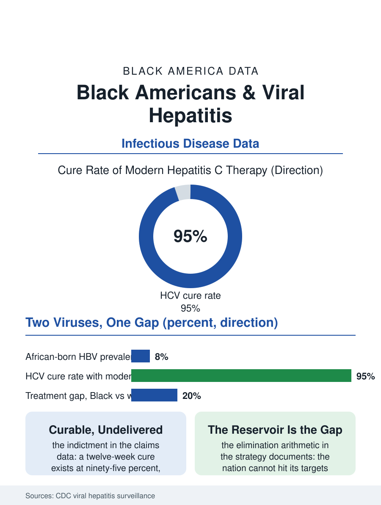

Black Public Health
Preventable, Curable, Undelivered: Black Americans and Viral Hepatitis
Hepatitis B rides the African-born streams, hepatitis C the baby-boom cohort, and both are preventable or curable while Black treatment lags. The hepatitis file.

Viral hepatitis in Black America tells two different stories by virus: hepatitis B concentrated in the African-born population of the immigrant streams, and hepatitis C concentrated in the baby-boom generation and, in its newer wave, the injection drug use epidemics, both underdiagnosed and, since the antiviral revolution, curable or controllable at rates the treatment data do not yet reflect for Black patients. This article reads the hepatitis file.
Two Viruses, Two Geographies
Hepatitis B's Black epidemiology is substantially an immigrant epidemiology. The African-born population carries infection rates an order of magnitude above the U.S.-born average, reflecting the endemic prevalence of the origin countries, where the virus transmits vertically at birth and horizontally in early childhood, and the screening data find the prevalence among African-born Black adults running in the high single digits, with the community's own awareness low, since the infection is typically silent for decades. The U.S.-born Black population's hepatitis B burden is far lower and falling, the vaccine era's success, since the infant vaccination program of the 1990s and the risk-group vaccination that followed converted hepatitis B from a common to a rare acquisition in the native-born file. Hepatitis C runs the opposite geography: the baby-boom cohort, born in the mid-century decades before screening and sterilization modernized, carries the classic prevalence peak, the virus having spread through the transfusion era and the injection economy of the 1970s and 1980s, with Black baby boomers' prevalence above the cohort average, and the newer wave, the injection drug use surge of the opioid era, writes a younger prevalence map whose racial distribution the surveillance systems are still resolving. The two viruses' combined burden makes liver disease, the NAFLD file's neighbor, a leading cause of death that is substantially preventable on both fronts, vaccine for one, cure for the other.
The Cure and the Access Gap
The direct-acting antivirals rewrote the hepatitis C file clinically: a twelve-week oral course curing over ninety-five percent of cases, one of the cleanest therapeutic victories in modern medicine, which makes the treatment data's racial pattern the file's indictment. Black patients with diagnosed hepatitis C have received the curative therapy at lower rates than white patients in the claims and cohort data, the gap composed of the familiar components, insurance status and the Medicaid restrictions that rationed the expensive course in the early years, the specialist referral bottleneck, the competing priorities of the clinics serving the most burdened patients, and the criminalization-adjacent populations, patients in custody and recently released, whose care the correctional health systems fragment. The screening expansion that was supposed to find the cases, the one-time baby-boom screening recommendation and its successor universal adult screening guidance, reached Black patients at lower measured rates in the survey data, the same cascade failure the screening file records for cancer. Hepatitis B's management gap is the mirror: the vaccine's availability for the household contacts of the infected, the antiviral suppression for the chronic carriers, the liver cancer surveillance the guidelines require, all delivered at lower rates to the African-born population whose language access and insurance data the immigrant files explain. The result is a preventable disease file in which the preventable part is the system's work, and the system's work is the part unevenly done.
Elimination, On Paper
The public health establishment has adopted hepatitis elimination as a formal goal, the World Health Organization's targets and the national strategy's, and the data make the arithmetic plain: elimination is achievable with the existing tools, the vaccine, the cure, the screening test, and the failure would be an implementation failure, not a scientific one. The community organizations' role in the file is documented and distinctive: the Black health organizations, the faith-based screening programs, and the immigrant community health worker programs of the outreach files, run the screening events and the linkage work that the formal system's referral chains drop, and the states that funded the Medicaid expansion and removed the fibrosis-stage rationing of the cure saw their treatment gaps narrow in the claims data, the policy variable doing what exhortation could not. The hepatitis file closes on the ledger's simplest entry: a virus that can be prevented by a vaccine, a virus that can be cured by a pill, and a population whose share of both burdens exceeds its share of either remedy. The elimination targets have dates attached, and the surveillance data will record whether they were met or missed. The file's contribution is the arithmetic the targets imply: the nation cannot eliminate hepatitis without closing the Black gap, because the gap is, numerically, the largest remaining reservoir of both viruses on the American map.
More in Black Public Health
Hypertension Among Black Adults: Prevalence, Control, and Consequences
About 55 percent of Black adults have hypertension — the highest rate of any U.S. group. Prevalence, onset, control, and the stroke, heart, and kidney consequences in the data.
Diabetes Among Black Adults: Prevalence and Complications
Nearly one in five Black adults has diabetes, diagnosed or undiagnosed — and its complications fall with particular weight. The CDC data on prevalence, control, and outcomes.
Black Life Expectancy: The Gap at Birth and Its Causes
Black life expectancy at birth is about 73 years, roughly five years below the national figure — the summary measure of every health gap in this section. The CDC data.
Source: Centers for Disease Control and Prevention, Viral Hepatitis Surveillance; clinical treatment and claims literature.